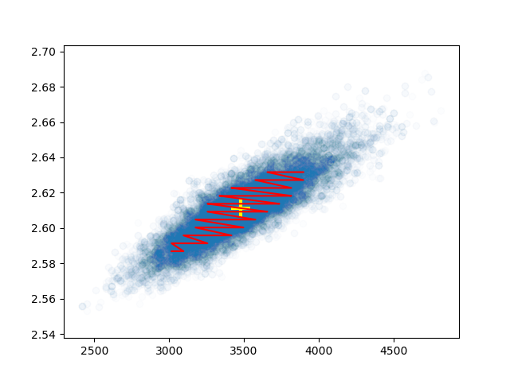

About Me
I am a researcher, software engineer, and writer.
My interests in life are varied, but have a central theme running through them: how is it that the world came to be the way it is, and how can we make it better for those who are facing injustices due to where we are now?
I am academically trained in physics, and so am able to tackle complex physical phenomena through maths and modelling, and analyse them through statistics and data analysis. I am always curious about anything to do with science and technology, and firmly believe physics shines the most when looked at through an interdisciplinary lens.
Keywords that represent my interests and the type of content that you will see reflected throughout my research, writing, and online presence are listed below (not listed in order of priority):
- Exoplanet atmospheres and their characterisation
- Early-Earth conditions and habitability of exoplanets
- Gaian thinking in relation to climate activism and AI ethics
- Chemical and air pollution
- Climate adaption and mitigation, including climate finance
- Surveillance capitalism and the evolution of privacy
- Bayesian optimisation, parameter estimation, and machine learning
- Pedagogical practices in light of technological advances
Education
My master's degree was earned from the University of Hertfordshire in 2018: an upper-second class MPhy with honours. My favourite modules in University were those that involved the most coursework and coding. Particular highlights included:
- Rocket Performance and Propulsion, which thoroughly enthralled my inner six-year old who’d grown up visiting both the NASA centres in Houston and Florida numerous times;
- Programming and Statistics, where I learned how to more thoroughly parse through data and its meanings;
- Relativity and Field Theory, where I could apply the advanced calculus methods I had learned in Dynamics and Geometry to explore quantum electrodynamics;
- and Atmospheric Physics, where I was able to learn all about the physics and maths of atmospherics, as well as the practical ways in which to observe atmospheric metrics remotely.
And of course, I loved doing the various research internships each summer, which spanned from helping to classify dwarf galaxies by their elemental abundances with Dr Chiaki Kobayashi (leading to a poster authorship), to the brown dwarf atmosphere retrieval work I did with Dr Ben Burningham and his Brewster code. You can find out more about this on my Research page.
Equity and Inclusion
During my time at Hertfordshire, I became interested in equity and inclusion, and this started my journey of investing my time in improving outcomes for STEM students that don't come from the "typical" background. I applied for, and was selected by lecturers to be, 'SSRO' at Hertfordshire–-a role wherein I represented my School and course representatives to the Student’s Union. As SSRO, I represented a wide variety of student opinions, and worked to create change in our School’s curriculum in order to promote student’s learning and well-being.
I was a member of the Equality Committee and presented regularly at department meetings, including a presentation to the Vice-Chancellor and his office and Juno meetings. I met with student representatives regularly, encouraging them to address issues with lecturers and advising them on how best to tackle any course concerns, using insight from my own past two years of being student representative to do so.
It was both my work as Chair of my University's physics society and SSRO that led to my nomination of Vice Chancellor’s Student of the Year for PAM by the staff at PAM, amongst other University awards, as well as being chosen to be the student speaker for my graduation in September 2018 (see below).
My work in this area continues to this day; and I'm keen to help represent diverse voices in STEM however I best can, whenever I can.
My Background
I received my dual high school diploma from St. Paul American School Beijing in 2014, where I earned an American diploma with a 3.75 GPA (of a 4.0 scale) as well as an equivalent Chinese diploma. I had previously attended high school in Texas and Florida.
I am an EU citizen and now consider the UK and EU my home. Asking me where my favourite place to live is, or where my accent really comes from, always leads to an interesting conversation!